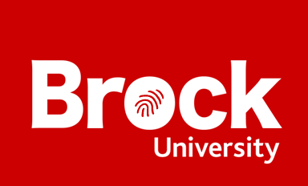
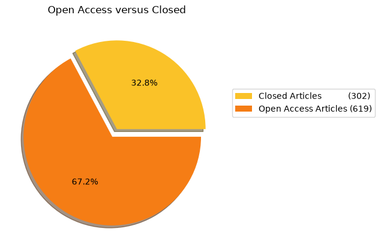
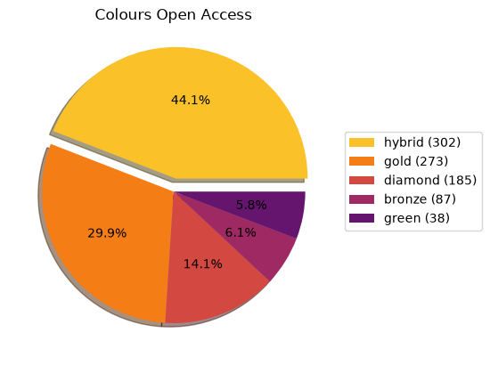
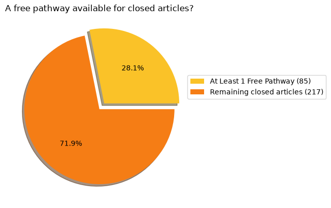
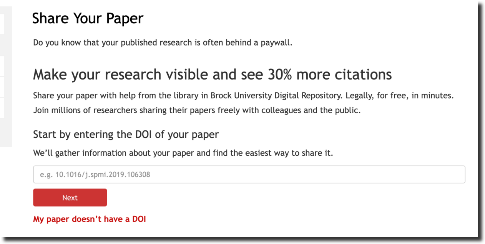
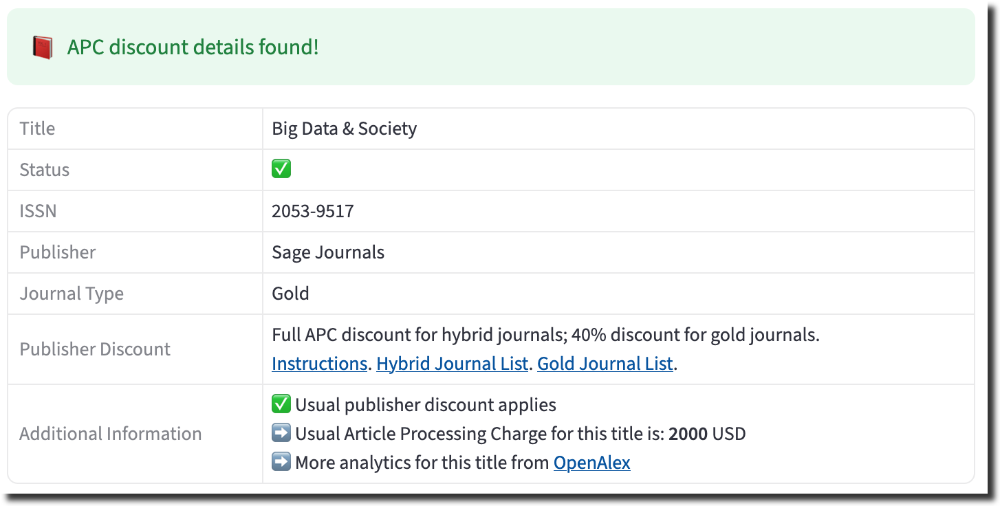

A yearly check-in of some Scholarly Publishing topics at Brock University. It presents some analysis of publishing trends at Brock University over the 2025/2026 academic year. This report is published as part of Open Access Week 2026 celebrations. You can find previous reports on our Publishing Guide.
Over the course of July 1, 2025 to June 30, 2026 a total of: 921 articles have been published by Brock Researchers.
We can divide all journal articles into two categories: Open Access or Closed. The Brock Library website explains the dynamics of these differences. The most important detail here however is that Open Access articles are available to readers without any payment! Sometimes a journal charges an article processing charge (APC) to make an article open access. This happens for both closed journals with some Open Access content and for totally Open Access journals.
Sometimes it is possible to publish an earlier version of a closed journal article in a place like the Brock University Digital Repository to have it become Open Access. We call this having a Green Open Access Pathway.
Does this sound confusing? Well it is. The following graph show the proportion of closed and open access articles published by Brock researchers.

We can now examine the different colours of Open Access journals published. The pie graph below shows the breakdown of these categories. The library website has a description of what these colours mean.

When publishing in a closed journal there is often something called a green pathway that will allow the author to either buy out Open Access rights to the article or to allow them to deposit a certain version of their article to the Brock University Digital Repository. The breakdown of what Green pathways exist for Brock author is shown in the following pie graphs.

In contrast, the following graph shows how many Closed papers have at least one free pathway to achieve some version of Open Access. This is great news, by doing a bit of work we can make a bunch of research available Open Access without paying any money.
This means that there is a free way to make 85 closed articles Open Access!
The library is developing a program to contact Brock affliated authors of these 188 articles to encourage them to submit an eligible version into the Brock Digital Repository to achieve Open Access. All researchers will need to is copy and paste the DOI of their paper and upload a PDF copy to a form.

If you published recently and fall in this category of Closed, expect an email soon with more details about this project.
As described some publishers enable Open Access through the payment of an additional Article Processing Charge (APC). This is on top of regular subscription costs that the library already pays to get access to the journal. All figures in CAD. Sometimes this fee is paid by a research grant, sometimes directly by the researcher. Since research teams span different organizations APC payments might also span different organizations, so it is fair to say these fees weren’t all paid out by Brock researchers directly. Some of these fees might of come from Transformative Agreements.
It is difficult to navigate through all of the components involved with APCs. Brock now has an APC Waiver & Discount Viewer that will help explain what titles you can receive relief on. Sometimes there is a full discount!

Since this report is the second of it’s kind we can track the difference from last year to this year. Here’s some intersting pieces of comparison.
We have developed a new guide that will help you get the most of out of your publishing. The first step is to create an ORCID, and put Brock in your affiliation, both of these steps are outlined in the guide. Then when you publish be sure to share your ORCID with the journal and your content will automatically get included in this analysis.
How to get your journal articles into this list
This data is built with a few assumptions involved and outlined below
Notebooks and data used to compile this report are freely available online. If you have an idea for what to add to this report please get in touch.
The data in this analysis was sourced from
Read the article from Journal of Librarianship and Scholarly Communication about the 2025 version of this report